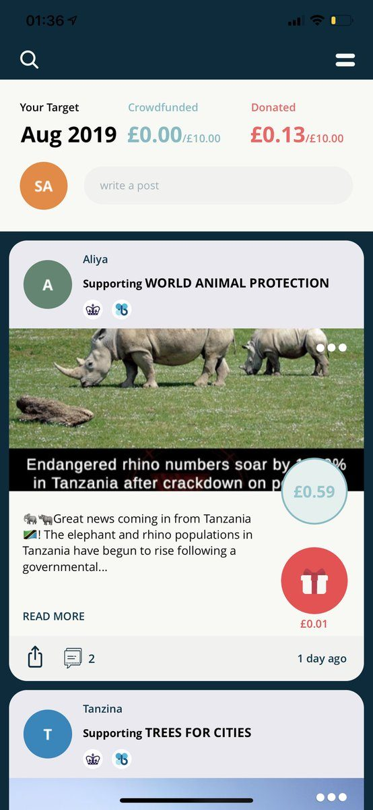
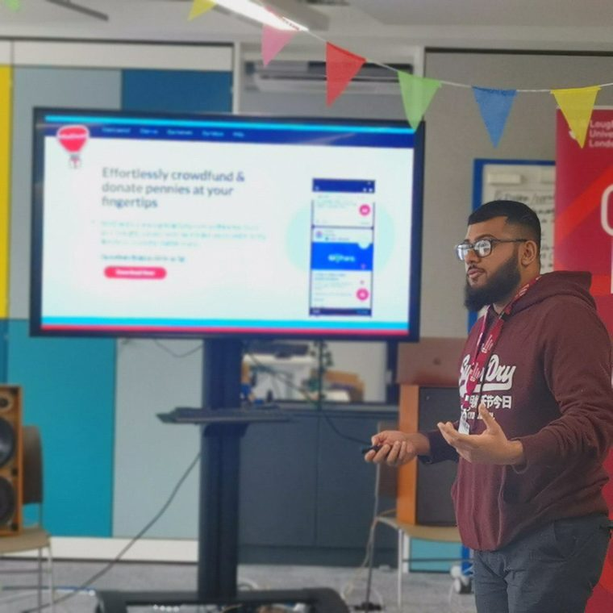
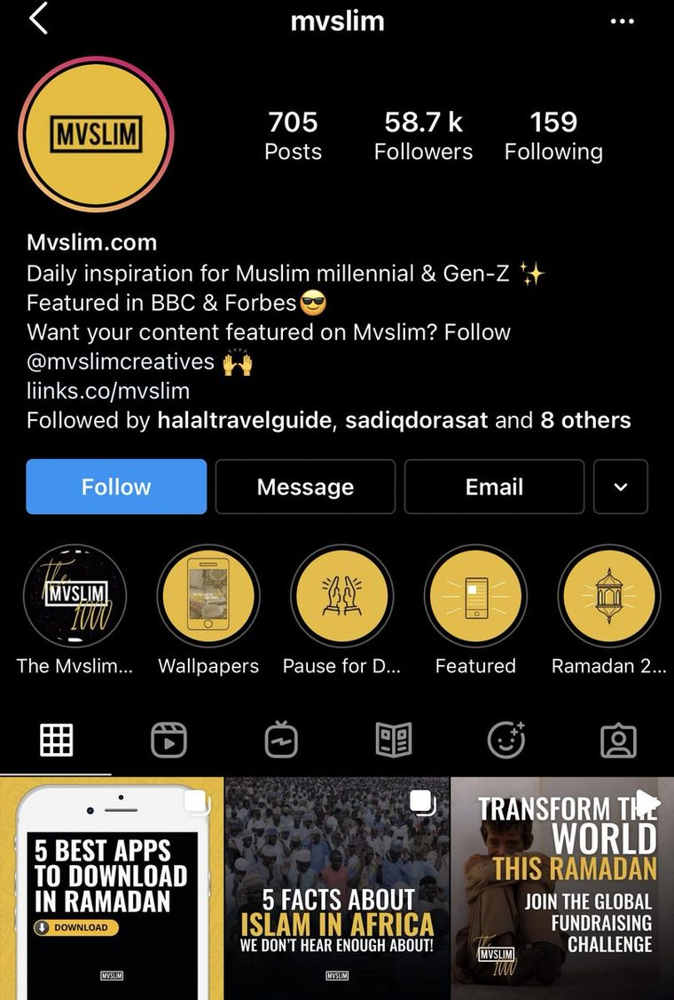

The best thing I did at Goldman Sachs was talk my way onto someone else's janky side project. Mehti prayed next to me every day. One afternoon on the way out I asked how it was going. I meant it as a greeting. He heard it as a question about his startup, and started telling me everything. He'd coded it himself and it barely worked. The idea was that every like turns into a penny for charity, so content creators could fundraise just by posting. I couldn't stop thinking about it. So I asked if I could work on it. I was 19. The whole company was two co-founders, one engineer, and me. We got into an accelerator called Fast Forward in Stratford. My Goldman apprenticeship was three days work, two days uni, so I started skipping the uni days and going to the programme instead. I didn't have a growth strategy. I just started posting about what we were building on Twitter because it felt like the obvious thing to do. Then I found a hook that made people finally get what MiniDeed was, and one tweet went viral. That turned into a funnel into a Telegram community, and it kept growing on its own. Then Ramadan hit. High profile Muslim creators started reaching out, New Arab, Islam Channel. We ran a campaign and the numbers got kind of mad. 26,000 donations, 800,000 taps, 47,000 posts across 26 countries. oh btw - he never did tell me how he was doing.
MiniDeed
2018 – 2021
A social app where every like was worth a penny to charity. My first company, built while I was an apprentice at Goldman Sachs.
- £26kraised, all of it to charity
- £0revenue, ever
- 25countries
What I say about it now, and what I was actually posting at the time.
It started in a basement prayer room. Mehti prayed next to me every day at Goldman and one afternoon on the way out I asked how he was doing. I meant it as a greeting. He heard it as a question about his startup and told me everything.
The idea was simple enough to explain in one line, which is usually a good sign. You see a cause, you feel helpless, all you can do is raise awareness. So we made the awareness itself worth something.
You ever see a cause on social media and feel helpless because the only thing you can do is just raise awareness? That’s why we created MiniDeed, an app where you raise money for the causes you care about by creating posts and donate pennies to other causes!

I was eighteen and had no idea what I was doing, so I kept showing it to people.
never I thought I’d read minideed praise in another language in just 2 month but we’re already here. MiniDeed is going international! 🇮🇹 ✈️
Having a lot of fun presenting @MiniDeed at @FFWDLondon. Been sharing your comments and ideas, they love it! Keep it up!

People started using it to talk about what they were struggling with. I did not design that.
MiniDeed is really precious tonight with all the wonderful MiniDeeders sharing their mental health struggles with the #MiniStruggle hashtag. I love the safe space it’s creating for people to open up in this way
Then the number that still surprises me. Twenty five countries and £26,000, raised entirely through likes, by people who mostly had never donated to anything before.
This MiniDeed journey has been amazing thank you all you MiniDeeders that have joined us on this journey this year. Without you we couldn’t have reached over 25 countries and raised £26k through just likes ♥️ 2021 is about to be even better with you guys you’re not ready...
Here is what I got wrong. We removed follower counts because they felt toxic, and people churned because we had taken away the thing they came for. You cannot opt out of the attention economy by pretending it is not there.
We raised £26,000 for charity through an app where every like was worth 1p. We made exactly £0 in revenue. I was 18. First year of my degree apprenticeship at Goldman Sachs. I met the co-founder in the basement prayer room. We'd just finished praying and I asked him how he was doing, just being polite, and he mistook it as me asking how the app was doing. This man was probably mid-thirties, been at Goldman for years, and he just started telling me about this social media platform where every like triggered a micro-donation to charity. I had no idea what he was talking about. But I was in. That's how MiniDeed started for me. 1p, 2p, 5p. Tiny amounts that added up across 25 countries over two years. We onboarded Islamic Relief, Human Relief Foundation, a bunch of smaller orgs. We got featured in The New Arab. And somehow built a community where people were opening up about mental health because the whole vibe was just different. Users told us it was the only app where they felt safe doing that. Honestly watching the live donation ticker go up was more addictive than any MRR dashboard I've looked at since (and I say that as someone who now stares at dashboards for a living). We never figured out how to make money from it. Donations still trickle through the app daily, years later. But it was my first real taste of building something and I think about it all the time. 18 years old, sitting in Goldman Sachs by day, shipping a charity app by night. It led me to build the highest-rated burger joint in London. And now Draper.
It still takes donations daily, years after we stopped touching it. Sadaqah jariyah beats MRR. I kept the mug.
In love with my new desk 😍 ft my minideed mug

Lately
Content is product. Product is content. I've said it maybe 200 times now. Most founders nod and then go do the opposite anyway. We ran Simply Smashed with zero paid marketing. Literally zero. We were just documenting the messiness of building a burger joint from the back of a flower shop and posting it, and that was doing the job a £5k/month ad budget would've done. We became the highest-rated burger spot in London and never boosted a single post. Then MiniDeed happened. The product was good and the impact was real and nobody knew it existed. The thing about having no distribution is it doesn't matter how good your product is. Nobody sees it. Completely opposite outcomes that somehow taught me the exact same thing. The founders who get this are building content into the product from day one. The GTM isn't a department you bolt on in month six, it's the whole thing. If you just raised and you're trying to decide whether to invest in content or put it off, the thing you're actually deferring is distribution.
sadaqah jariyah impact metrics by far gives you a bigger serotonin boost than growing any MRR or ARR the most fun I've had building was Minideed and donations to this day are being made daily through the app
I miss building in social media man, my time at minideed was so fun
This but when at minideed we introduced following profiles but with no following/follower counts because people felt that was toxic We didn’t unlock any new growth and a lot of people churned because it wasn’t giving them the serotonin hit they wanted
Just going about our day and we see that @MiniDeed has just featured on Mvslim as the 1st of 5 best apps to download in Ramadan!

Hey guys, we’re looking for MiniDeeders who would be willing to record a short selfie video of them talking about MiniDeed and our upcoming #MiniRamadan campaign. Wouldn’t take more than 5 mins of your time, If you’re up for it DM me!